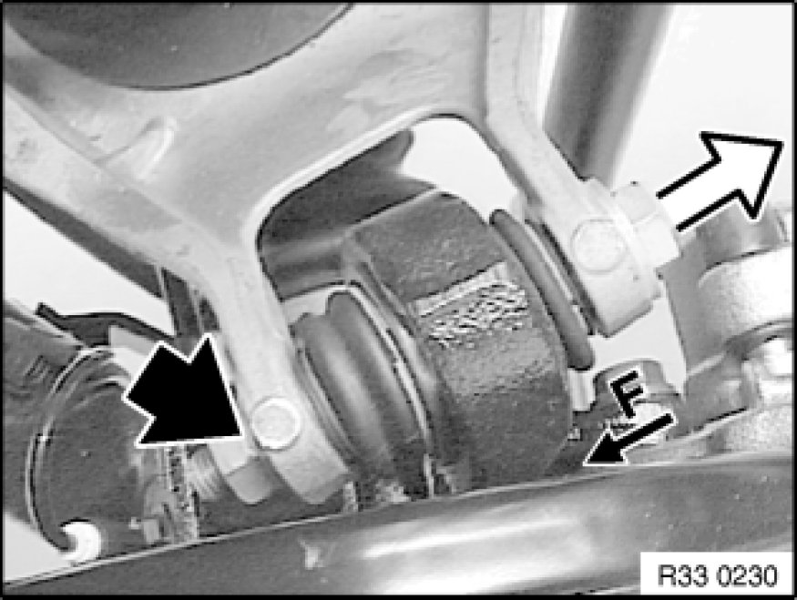

Replacing One Upper Control Arm
33 32 071 - Replacing one upper control arm

Note:
If the upper control arm is detached from the rear axle carrier/trailing arm, it is necessary after reinstallation to carry out a wheel/chassis alignment check.

Necessary preliminary tasks:
- Remove coil spring Removing and Installing/Replacing Rear Left or Right Coil Spring
- Remove stabilizer link from upper control arm Replacing Stabilizer Links for Stabilizer
- If necessary, remove jointed rod of ride-height sensor from upper control arm
- Support rear differential Removing and Installing/Replacing Rear Differential and remove from rear axle carrier

Unfasten nut.
Remove screw towards rear.
Installation:
Observe bolt insertion direction (F = direction of travel).
Replace self-locking nut.
Tightening torque 33 32 24AZ Control Arms and Struts (Rear).
Unfasten nut.
Remove bolt (1) towards rear.
Remove upper control arm (2) sideways.
Installation:
Note insertion direction of screw.
Replace self-locking nut.
Tighten bolt in normal position Moving Vehicle Into Normal Position.
Tightening torque 33 32 14AZ Control Arms and Struts (Rear).
After installation:
- Check that output shaft is correctly seated in rear differential.
- Perform chassis alignment check